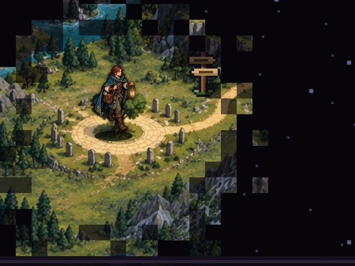

Oct 2, 2026
Why study law if AI already knows the provisions?
Opening lecture for first-year law & administration students: a playable, HoMM-style map through legal-AI research — jagged frontiers, courts, hallucinated case law, and what's still worth learning by hand.